FILE SYSTEM
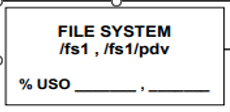Para verificar o file System, entre no servidor srvsaveFFF com seu usuário do Windows, e digite o comando df, para verificar o percentual usado na armazenagem dos arquivos.
Como exemplo o fs1 está em 41%, lembrando que se o fs1 ultrapassar o valor de 81% abrir chamado para produção, utilizando CSC Client, e ligar para os mesmos informando a situação.
NETBACKUP - Verificar a liberação das fitas.
Nesse passo é necessário entrar no Netbackup, para verificação das fitas no robô
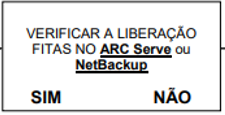Entre com seu login e senha do Windows, Após aberto é importante verificar sem tem alguma fita “full’, "Frozen", se está ativa, na aba "Media" no canto esquerdo do Netbackup, por exemplo se ela estivar com o status 96, proceder: ela está cheia é será necessário realizar a troca da mesma.
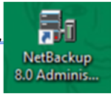Aberto o Media, Se todas estiverem com o status Active, só prosseguir e não será necessário a realização da troca de imediato, a menos que quando for rodar alguma salva e ela ficar full com status 96 ou dê algum problema não finalizando com o status “0” será necessário a troca da fita e rodar a mesma novamente.
SJBPEDI
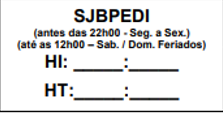Executar o SJBPEDI de acordo com a rotina batch, Job executado para que o Rm consiga realizar notas de transferência e também um job que automaticamente faz a transferência do arquivo dá própria filial para as outras filiais da regioanl prossigam normalmente com a rotina batch extrema atenção ao rodar esse job, segundo sempre conforme indicado na rotina
Esse job também é utilizado pelo a operação do RM(Recebimendo de Mercadorias) onde necessitam dele ativo até o horário determinado no batch rodando para que posso realizar notas de transferências.
Checagem de arquivos
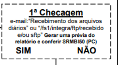Verificar apenas com Shell autorizados da matriz, como "antesbatchFFF" e "arquivos.sh"
É extremamente importante verificar se todos os arquivos foram gerados, e que não estão compactados com o .gz, duplicados, com alguam incongruência. Se por ventura estiver um arquivo com gz, ele está zipado, logo entrar no intrega no srvsaveFFF, lista o arquivo zipado com ll e logo realizar a descompactação do arquivo utilizando o comando gunzip nomearquivo.gz pois quando o arquivo está zipado, ocorre problemas de lentidão na sequência que utliza o arquivo ou até mesmo a sequência nem é processada coretamente.
End of Day
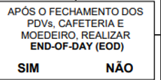Utilize o menu do TPL para realizar o End of day.
Após o fechamento dos PDV's, Cafeteria, e Moedeiro.
Lembrando, conforme especificado no check-list, realizar esse procedimento após a frente de caixa finalizar todos os procedimentos correlatos, tendo em vista que após o EOD, ninguém poderá utilizar o sistema. pois durante o batch são executadas funções que reorganizam e atualizam tabelas.
Redução Z x SASOI60
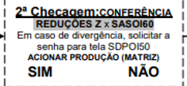A conferência de valores deve ser realizada entre a RDZs e tela SASOI60 - TOTALIZAÇÃO DE PDVS, Realizar cada redução e guardar todas corretamente, pois, na tela de confêrencia deverá verificar se o valor corresponde ao que indica na tela SASOI60 (Totalização de PDVS).
- Pontos importantes SASOI60
- Quando o valor está correto deve-se digitar S+ENTER
- Quando o valor está errado/divergente deve-se digitar N+ENTER e digitar o valor da RDZ na coluna, feito isso a própria tela vai exibir o valor faltante na coluna DIFERENÇA.
- Após conferir os valores de todos os PDVs, caso ocorra diferença em algum, entre em contato com a produção
SJBDD00
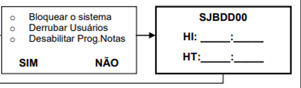- Bloqueio do sistema
- Ninguém deverá utlizar o sistema em quanto a rotina batch é executada
- Automaticamente os usuários são bloqueados, junto com o sistema e as notas.
SALVA ANTES

Abra o Netbackup, no canto esquerdo em "Policies”, click com o direito em Diário_Antes depois click em Manual Backup, depois Ok e acompanhe a salva na aba Activity Monitor, onde o icone “boneco” ficará correndo em verde, click nesse ícone anote na folha o barcode ID e acompanhe o processamento da salva ao anote o horário inicial e o término da salva antes.
SJBCADE
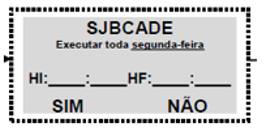JOB executado apenas em Unificação, o mesmo faz o processamento da unificação de custos.
SJBDD01
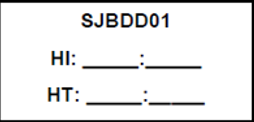 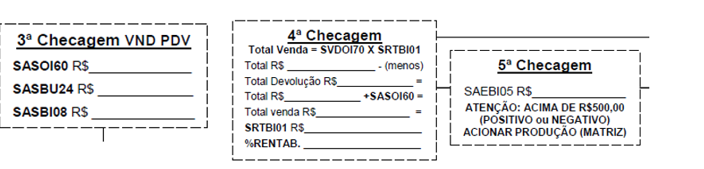Realiza a atualização do sistema
Esse job está correlacionado com as checagens conforme conforme a imagem acima.
Job onde precisamente os arquivos serão utilizados, por isso é de extrema importância que começe a rotina batch com todos os arquivos corretamente.
SJBDD02
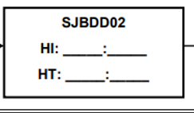Geração de relatórios
Esse job emite as etiquetas batckup, além de relatórios.
SJBDD03
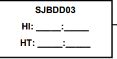 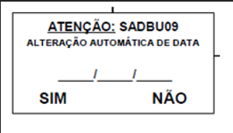Exclusão
Job executado para realizar a exclusão de alguns arquivos, e também é informando para realizar a alteração da data online e batch do sistema para o dia vigente, sadou09.
SJBDD04
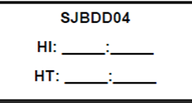Job como pré abertura da loja
Job executado para realizar a exclusão de alguns arquivos, e também é informando para realizar a alteração da data online e batch do sistema para o dia vigente, sadou09.
PDVs
O ponto de venda (PDV) é reconhecido como a área mais delicada em uma loja. Para assegurar um monitoramento eficaz das vendas, implementamos o sistema TPLinux, que opera com os softwares SASOU39, SASOU43 e SCDOU27. Dessa forma, garantimos que os PDVs funcionem de maneira otimizada e eficiente.
- SASOU39
- SASOU43
Essa nota faz processamento on-line de PDV.
- SCDOU27
Nota que faz a atualização de Sintegra e regras tributarias.
Onde a nota SASOU 39 atua no Servidor de PDV Ibm on-line.
Comandos de Impressão
- HABILITAR A IMPRESSORA
sudo lpadmin –plptXX –E (maiúsculo)
- ACEITAR FILA DE IMPRESSÃO VISUALIZAR IMPRESSÃO PRESA
sudo accept lptXX
- CANCELAR FILA DE IMPRESSÃO
sudo cancel -all lptXX (xx=número da impressora)
-
VISUALIZAR FILA
lpstat –t
-
DIRECIONAR IMPRESSORA
dfrun exe sadou06
sudo lpadmin –plptXX –E (maiúsculo)
sudo accept lptXX
sudo cancel -all lptXX (xx=número da impressora)
lpstat –t
dfrun exe sadou06
Altera Geral
- .HST
Arquivo gerado porém não consumido.
- .DONE
Importação Ok, arquivo consumido pelo TPL.
- .TEMP
Em processo ou travado, verificar o horário que foi gerado, no díretório cd: /fs1/pdv/tplinux, listar o produtos ll prod e verificar o horário, caso seja no horário da madrugada abrir chamado para gerar um novo altera.
- Horário correto:
Horário para fazer a importação, onde está automatizado, assim que o SOD for executado, a importação será feita automaticamente, acompanhar via tpl putty o log de importação
Seguir a regra de reiniciar o servidor TPL: SERVIDOR TPLINUX, DEVE SEMPRE SER REINICIADO APOS O EOD ("END OF DAY"), E ANTES DO SOD ("START OF DAY"), DE SEGUNDA A NOITE ATE QUINTA ENTRE A 1 E AS 2:30 DA MANHÃ OU APÓS AS 3:30 ATÉ AS 4:40, POIS AS 3H DA MANHA O TPLINUX INICIA AS ROTINAS DE SALVA DO BATIMENTO AUTOMATICO E AS 5H O BACKUP DO BANCO.
Arquivo gerado porém não consumido.
Importação Ok, arquivo consumido pelo TPL.
Em processo ou travado, verificar o horário que foi gerado, no díretório cd: /fs1/pdv/tplinux, listar o produtos ll prod e verificar o horário, caso seja no horário da madrugada abrir chamado para gerar um novo altera.
Horário para fazer a importação, onde está automatizado, assim que o SOD for executado, a importação será feita automaticamente, acompanhar via tpl putty o log de importação
Seguir a regra de reiniciar o servidor TPL: SERVIDOR TPLINUX, DEVE SEMPRE SER REINICIADO APOS O EOD ("END OF DAY"), E ANTES DO SOD ("START OF DAY"), DE SEGUNDA A NOITE ATE QUINTA ENTRE A 1 E AS 2:30 DA MANHÃ OU APÓS AS 3:30 ATÉ AS 4:40, POIS AS 3H DA MANHA O TPLINUX INICIA AS ROTINAS DE SALVA DO BATIMENTO AUTOMATICO E AS 5H O BACKUP DO BANCO.
Programa de notas e suas funções
- SCDOU27
Atualização de Sintegra e regras tributarias
- SVDOU25
Cálculo da nota fiscal atacadão background
- SASOU25
EMISSÃO DE NF-e - A.S
- SASOU39
Servidor de PDV Ibm on-line
- SASOU43
Processamento on-line de PDV
- SASOU46
Processamento on-line de notificação Rub
- SASOU47
Geração online de interface xml RUB
- FLEXJAVA
Impressão de notas e etiquetas
- SASOU05
Projeto E-commerce / ifood
Atualização de Sintegra e regras tributarias
Cálculo da nota fiscal atacadão background
EMISSÃO DE NF-e - A.S
Servidor de PDV Ibm on-line
Processamento on-line de PDV
Processamento on-line de notificação Rub
Geração online de interface xml RUB
Impressão de notas e etiquetas
Projeto E-commerce / ifood
AV
AV é o análitico de Venda.(O mesmo é utilizado para realizar a conferência na tela SASOI60(Totalização de PDV'S.))
- /fs1
- Save
- Integra
Diretório onde fica armazenado arquivos da filial e também arquivos após a execução do SJBPEDI, pois recebe arquivos das filiais e também da matriz.
- fs205
Raiz do Save, (Sistema de Administração de Vendas e Estoque), fica armazenado o integra, rub, e retaguarda(cd /fs1/pdv/tplinux)
Sistema de Administração de Vendas e Estoque, responsável por disparar comandos e telas.
Faz o backup das transações.